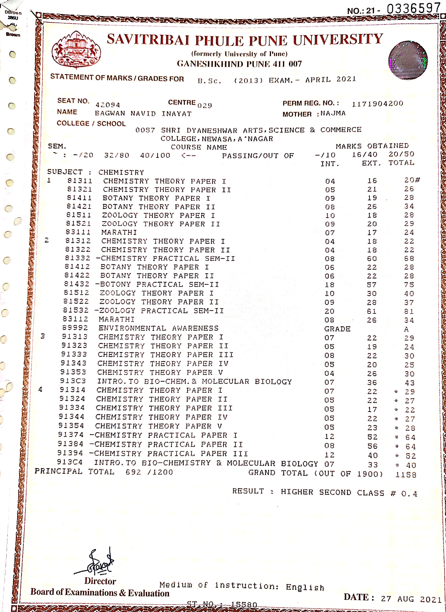
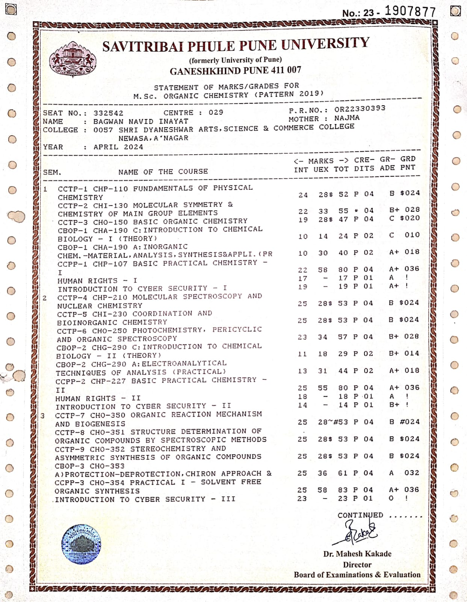
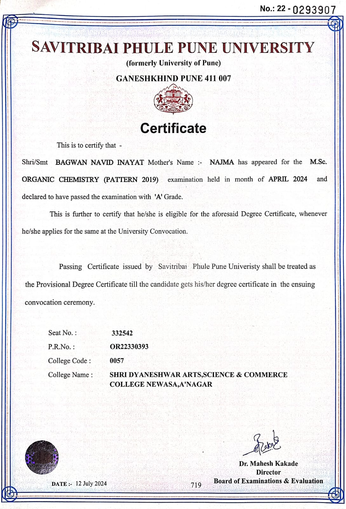
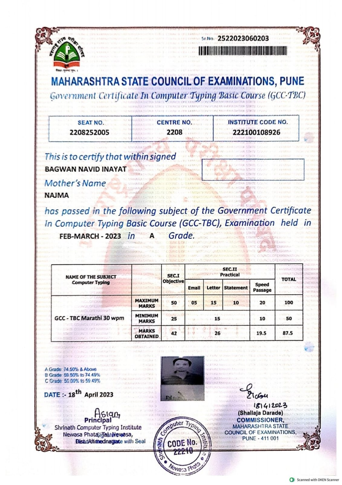
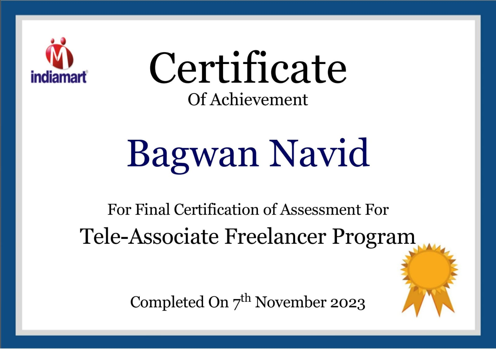

I am a
Welcome to My Learning Journey
In today's digital age, subject knowledge alone is not sufficient for teachers; effectively integrating technology in teaching is equally important.
This e-portfolio serves as a comprehensive record of my B.Ed journey, showcasing my growth as an aspiring educator.
Here, you will find a detailed description of the skills I have acquired, the teaching strategies I have applied, and the experiences that shaped my professional development.
This portfolio also reflects my learning process, including lesson planning, microteaching, classroom management, and reflective practice.
Additionally, it highlights the digital tools and innovative methods I have employed to enhance learning outcomes.
I hope this collection of my academic progress, practical experiences, and reflections provides a clear insight into my journey as a future teacher.
While preparing this e-portfolio, I received valuable guidance and cooperation from many people.
I sincerely express my heartfelt gratitude to the Principal, all subject teachers, and my guide
Prof. Gavhane S. N. of my college for their constant encouragement, expert guidance, and continuous support throughout this work.
I am also thankful to the college administration for providing necessary facilities and a positive learning environment.
Special thanks to my family and friends whose motivation, cooperation, and moral support proved invaluable during the completion of this e-portfolio.
Name: Bagwan Navid Inayat
Course: Two Year B.Ed
College: Sant Dnyaneshwar College Bhanashiware
University Name: Savitribai Phule Pune University, Pune
Selected Subjects: Science & Mathematics
Guiding Teacher: Prof. Gawhane S. N.
Teaching Philosophy: Learner-centered and reflective teaching focused on innovative and technology-driven practices.





Semester 1 - Practical PDFs:
Semester 1 - Digital PPT:
This e-portfolio is a reflection of my complete B.Ed academic journey. Throughout this course, I not only gained subject knowledge but also developed essential teaching skills, professional values, and a student-centered approach. The reflective process helped me evaluate my strengths and weaknesses and continuously improve my teaching practices.
Some of the significant artifacts included in this portfolio are lesson plans, micro-teaching sessions, practice teaching reports, project work, and the effective use of ICT tools. Through these experiences, I developed the ability to design structured lesson plans, apply appropriate teaching methods, manage classrooms effectively, and integrate technology into teaching.
During the B.Ed program, I enhanced my skills of explanation, questioning, blackboard writing, classroom interaction, and time management. Regular practice and feedback helped me improve my confidence, communication skills, and overall teaching effectiveness.
While preparing lesson plans, I initially faced challenges in time management and student engagement. However, through continuous practice and guidance, I incorporated interactive activities and improved lesson delivery. During micro-teaching sessions, I gradually overcame nervousness and improved voice clarity, presentation skills, and body language.
This e-portfolio clearly reflects my professional and personal development throughout the B.Ed course. It has shaped me into a responsible, reflective, and continuously improving teacher. The knowledge, skills, and experiences gained during this journey will guide me in becoming a skilled, competent, and inspiring teacher.
Email: nbagwan1321@gmail.com
Phone: 8668569949